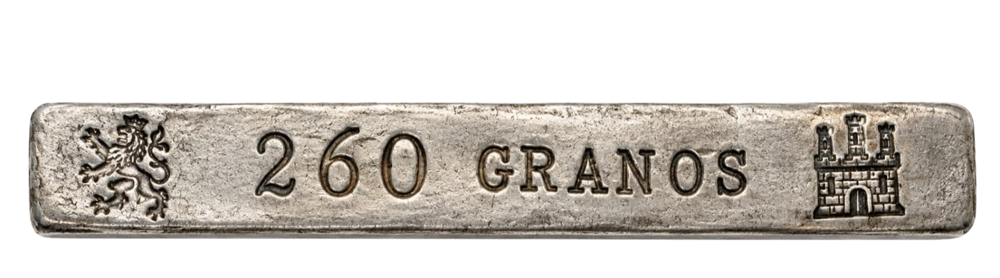

<!-- 1. BARRA DE ICONOS FLOTANTE -->
<div class="macuquina-floating-bar">
  <button
    class="macuquina-icon-btn"
    onclick="openModalPesos()"
    title="Conversión de Pesos de Plata Virreinal a Gramos y Kilogramos"
  >
    
  </button>
  <button
    class="macuquina-icon-btn"
    title="Conversión de Fineza de la Plata"
    onclick="cargarModalDesdeArchivo('conversor1.html', 'fineza')"
  >
    
  </button>
  <button
    class="macuquina-icon-btn"
    title="Conversión de Grano de Ley"
    onclick="cargarModalDesdeArchivo('conversor2.html', 'grano_ley')"
  >
    
  </button>
  <!-- 4. NUEVO: Plata en Pasta a Reales (El ícono donde apunta la flecha) -->
</div>

<!-- 2. VENTANA MODAL -->
<div id="modal-pesos-virreinales" class="macuquina-modal-overlay">
  <div class="macuquina-modal-content">
    <button class="modal-close-btn" onclick="closeModalPesos()">&times;</button>

    <div class="modal-header">
      <h2>Conversión de Pesos (Época Virreinal)</h2>
      <p>
        Ingresa el valor para obtener el resultado en gramos o kilogramos al
        instante.
      </p>
    </div>

    <div class="modal-body">
      <!-- Entrada: Marco -->
      <div class="conversion-row">
        <label>Marco</label>
        <div class="calc-fields">
          <input
            type="number"
            id="mod-marco"
            placeholder="0"
            min="0"
            oninput="calcularModal('marco')"
          />
          <span class="math-operator">x 230.04650 =</span>
          <div id="res-mod-marco" class="result-box">0.0000 g</div>
        </div>
      </div>

      <!-- Entrada: Onza (Alerta ≥ 8) -->
      <div class="conversion-row">
        <label>Onza</label>
        <div class="calc-fields">
          <input
            type="number"
            id="mod-onza"
            placeholder="0"
            min="0"
            max="7"
            oninput="calcularModal('onza')"
          />
          <span class="math-operator">x 28.75581 =</span>
          <div id="res-mod-onza" class="result-box">0.0000 g</div>
        </div>
        <div id="error-mod-onza" class="error-container"></div>
      </div>

      <!-- Entrada: Ochava (Alerta ≥ 8) -->
      <div class="conversion-row">
        <label>Ochava</label>
        <div class="calc-fields">
          <input
            type="number"
            id="mod-ochava"
            placeholder="0"
            min="0"
            max="7"
            oninput="calcularModal('ochava')"
          />
          <span class="math-operator">x 3.59448 =</span>
          <div id="res-mod-ochava" class="result-box">0.0000 g</div>
        </div>
        <div id="error-mod-ochava" class="error-container"></div>
      </div>

      <!-- Entrada: Tomín (Alerta ≥ 6) -->
      <div class="conversion-row">
        <label>Tomín</label>
        <div class="calc-fields">
          <input
            type="number"
            id="mod-tomin"
            placeholder="0"
            min="0"
            max="5"
            oninput="calcularModal('tomin')"
          />
          <span class="math-operator">x 0.59908 =</span>
          <div id="res-mod-tomin" class="result-box">0.0000 g</div>
        </div>
        <div id="error-mod-tomin" class="error-container"></div>
      </div>

      <!-- Entrada: Grano (Alerta ≥ 12) -->
      <div class="conversion-row">
        <label>Grano</label>
        <div class="calc-fields">
          <input
            type="number"
            id="mod-grano"
            placeholder="0"
            min="0"
            max="11"
            oninput="calcularModal('grano')"
          />
          <span class="math-operator">x 0.04992 =</span>
          <div id="res-mod-grano" class="result-box">0.0000 g</div>
        </div>
        <div id="error-mod-grano" class="error-container"></div>
      </div>

      <!-- Total Combinado -->
      <div class="conversion-row total-combined-row">
        <label class="total-label">Total Combinado</label>
        <div class="calc-fields">
          <div class="calc-spacer"></div>
          <div id="res-mod-total" class="result-box total-highlighted">
            0.0000 g
          </div>
        </div>
      </div>

      <div class="modal-footer-ref">
        <p class="ref-main">1 grano = 0,04992 gramos</p>
        <div class="ref-grid">
          <span>1 marco (4608 granos) = 230,04650 g</span>
          <span>1 onza (576 granos) = 28,75581 g</span>
          <span>1 ochava (72 granos) = 3,59448 g</span>
          <span>1 tomín (12 granos) = 0,59908 g</span>
          <span>1 grano (1 grano) = 0,04992 g</span>
        </div>
      </div>

      <!-- BOTONES DE ACCIÓN -->
      <div class="macuquina-actions">
        <button
          type="button"
          class="macuquina-btn-secondary"
          onclick="limpiarConversor()"
        >
          Limpiar
        </button>
        <button
          type="button"
          class="macuquina-btn-primary"
          onclick="closeModalPesos()"
        >
          Cerrar
        </button>
      </div>
    </div>
  </div>
</div>
